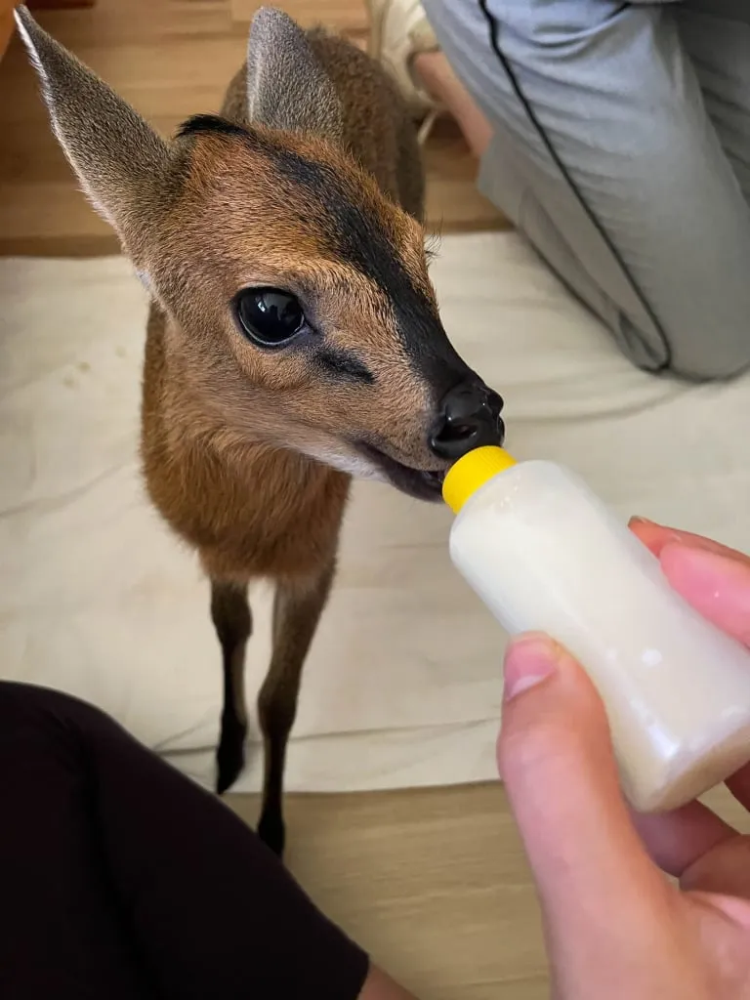

In a tragic turn of events, a beloved 6-month-old pet antelope named "Buggy" was fatally shot by Virginia Sheriff's deputies, sparking outrage among local residents and animal rights activists.
The incident occurred early Thursday morning when deputies responded to calls about an "exotic animal" in the suburban area of Springfield. The antelope, which had been legally owned and raised by the Thompson family since it was a fawn, had accidentally escaped from their fenced backyard.
"Buggy was like a member of our family," said Sarah Thompson, fighting back tears. "He was gentle, played with our children, and even had his own Instagram following. There was absolutely no reason for this level of force."
According to witnesses, Buggy was calmly grazing in a neighbor's garden when law enforcement arrived. Despite the family's desperate attempts to inform officers that the antelope was a domesticated pet, deputies made the decision to shoot, citing "public safety concerns."
The incident has sparked a heated debate about law enforcement protocols regarding exotic pets and the use of lethal force. Local animal rights organizations are calling for an investigation and reform in how such situations are handled.
The Virginia Sheriff's Office has issued a statement defending their actions, stating that officers "followed standard protocol for potentially dangerous wildlife." However, many community members and experts disagree with this assessment.